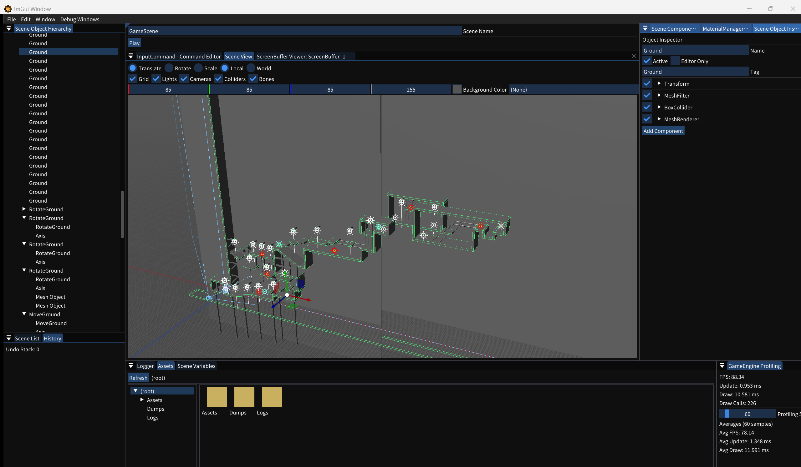

チュートリアル: エディターでシーンを作って動かす
実際のエディター画面を操作しながら、シーン作成、オブジェクト配置、当たり判定、AngelScript、入力、アセット、シーン遷移、描画先・カメラ・ライトの設定までを一通り体験します。
最初に確認すること
- DevelopmentまたはDebugで起動する
USE_IMGUIが有効な構成でのみエディターが表示されます。Releaseでは編集用UIは組み込まれません。 - エディターの主要ウィンドウを表示する見当たらないウィンドウは上部メニューの Window›ウィンドウ名 から再表示できます。
- 各ページの操作後に保存するFile›Save Scene... または
Ctrl+Sを使います。

画面の見方
| ウィンドウ | このチュートリアルでの役割 |
|---|---|
| Scene View | 編集中の3Dシーン、グリッド、ギズモ、コライダーを確認する |
| Scene Object Hierarchy | オブジェクトの作成、選択、親子関係、複製、削除を行う |
| Scene Object Inspector | 名前、タグ、コンポーネント、各パラメーターを編集する |
| Assets | Assets/以下のモデル、画像、音声、スクリプトを探す |
| Scene List | シーンの登録、起動シーンの指定、シーン切り替えを行う |
| Scene Editor | シーン名とPlay / Pause / Stop操作をまとめる |
JSONやAPIは「操作の結果」として扱います
通常の制作はエディターで完結します。各ページではまず画面上の操作を説明し、その後に保存先JSONや対応APIを補足します。内部構造を詳しく調べたい場合は各ページからリンクしているリファレンスを参照してください。
通常の制作はエディターで完結します。各ページではまず画面上の操作を説明し、その後に保存先JSONや対応APIを補足します。内部構造を詳しく調べたい場合は各ページからリンクしているリファレンスを参照してください。
学習ルート
| # | ページ | エディターで行うこと |
|---|---|---|
| 1 | シーンを作成する | Fileメニューから新しいシーンを作成する |
| 2 | シーンを登録する | Scene Listで登録内容と起動シーンを確認する |
| 3 | オブジェクトを作成する | HierarchyからPlayerを作成して名前を変更する |
| 4 | コンポーネントを追加する | 3Dオブジェクトを作り、Transformと描画設定を調整する |
| 5 | 当たり判定を付ける | BoxColliderを追加し、Scene Viewで形状を確認する |
| 6 | スクリプトを書く | ScriptComponentへAngelScriptを割り当てる |
| 7 | 入力を設定する | Input Command Editorで移動キーを割り当てる |
| 8 | アセットを使う | Assetsから既存アセットを確認してオブジェクトへ設定する |
| 9 | 再生とシーン切り替え | Playで実行結果を確認し、Scene Listから別シーンへ切り替える |
| 10 | 描画先オブジェクトを作成する | Screen Buffer Objectを作り、描画結果の出力先を用意する |
| 11 | カメラオブジェクトを作成する | Camera Objectを作り、描画先と射影設定を関連付ける |
| 12 | ライトオブジェクトを作成する | Light Objectを作り、種類・色・影・描画先を設定する |
準備ができたら、1. シーンを作成するへ進みます。